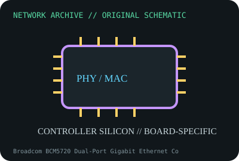

[ MODEL-SPECIFIC NETWORK HARDWARE ]
Broadcom BCM5720 Dual-Port Gigabit Ethernet Controller
Dual-port server Ethernet controller used in OEM network adapters and embedded boards. Confirm exact product label and revision before applying specifications.

IDENTIFICATION: Confirm manufacturer PID, hardware revision, device ID or module suffix. Nominal standards/link rates are not measurements of payload performance.
Exact specifications and compatibility
| Dedicated subcategory | Ethernet controllers and PHYs |
|---|---|
| Exact product/model | Broadcom BCM5720 Dual-Port Gigabit Ethernet Controller |
| Bus, ports and physical interface | PCI Express host bus; reference board routes dual MAC/PHY interfaces to copper magnetics and RJ-45 connectors. |
| PHY, radio or protocol | Broadcom NetXtreme BCM5720 dual-port 10/100/1000BASE-T controller family; device implementation determines WOL, NC-SI and management wiring. |
| Nominal rate (not measured) | Two ports at up to 1Gb/s nominal per link in a qualified design; not chip benchmark results. |
| Measured throughput | No measured benchmark is claimed for a physical specimen. A valid result must record host/peer, link partner, media/cable, driver/firmware, traffic pattern, test tool and duration. |
| Drivers, OS and firmware | Broadcom/OEM driver and firmware packages are board-specific; Linux tg3 driver supports applicable PCI IDs, while OEM NVM remains vendor controlled. |
| Compatibility | Requires an OEM board with compatible PCIe, magnetics, firmware and platform management wiring. Identify subsystem IDs before driver or firmware decisions. |
| Variant warning | BCM5720 controller is not the BCM5719 four-port chip or a specific HPE/Dell adapter. Similar NetXtreme families differ in port count and NVM. |
Model and revision notes
BCM5720 controller is not the BCM5719 four-port chip or a specific HPE/Dell adapter. Similar NetXtreme families differ in port count and NVM.
Broadcom/OEM driver and firmware packages are board-specific; Linux tg3 driver supports applicable PCI IDs, while OEM NVM remains vendor controlled.
Requires an OEM board with compatible PCIe, magnetics, firmware and platform management wiring. Identify subsystem IDs before driver or firmware decisions.
Archival, ESD and preservation notes
Archive marking, OEM board number, PCI IDs, NVM and MAC mapping; ESD shielding and board-level service records needed.
Document source URL, access date, document revision and specimen label/condition. Preserve without credentials or private configuration.
Primary manufacturer and standards sources
- Broadcom NetXtreme Ethernet controller familyPrimary manufacturer or standards documentation; verify exact SKU and host revision.
- Linux kernel tg3 driver documentationPrimary manufacturer or standards documentation; verify exact SKU and host revision.
- IEEE 802.3 Ethernet standardsPrimary manufacturer or standards documentation; verify exact SKU and host revision.
Manufacturer statements cover the named part or its documented product family; the exact labeled revision and vendor compatibility list take precedence.